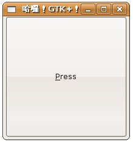
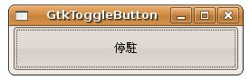
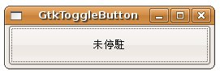

| 在 自
訂 callback 函式
中使用過GtkButton作為範例，最基本的GtkButton建立方式是透過gtk_button_new_with_label()來建立一個指定
文字的按鈕，您也可以使用gtk_button_new_with_mnemonic()，這會建立一個具有提示底線及快捷鍵功能的按鈕，例如將 自
訂 callback 函式 範例的gtk_button_new_with_label()該行換成gtk_button_new_with_mnemonic()： button = gtk_button_new_with_mnemonic("_Press");
指定的按鈕文字是以底線作為開頭，這會在顯示的按鈕文字上以「Press」的方式呈現，並且按下Alt+P時即可觸發按鈕Clicked，執行時的畫面如下：  若想要製作雙態按鈕（Toggle
Button），則可以使用GtkToggleButton，您可以gtk_toggle_button_new_with_label()、
gtk_toggle_button_new_with_mnemonic()函式來建立元件，雙態按鈕有停駐及非停駐兩種狀態，可以使用
gtk_toggle_button_get_active()取得雙態按鈕的狀態，也可以透過
gtk_toggle_button_set_active()直接設定按鈕為停駐或非停駐狀態，雙態按鈕所引發的Signal是"toggled"，若
是使用gtk_toggle_button_set_active()改變了停駐狀態，則會同時引發"clicked"及"toggled"兩個
Signal。
下面這個程式示範了GtkToggleButton的外觀與Signal處理：
#include <gtk/gtk.h> 以下為執行時的畫面參考：   |